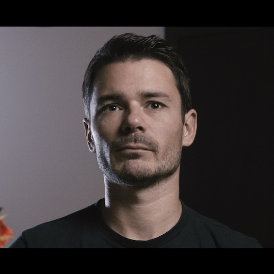

Külön élő adatok
Az információk Excelben, számlázóban, CRM-ben, webshopban vagy külön szoftverekben élnek.
Díjmentes, 3 hónapos pilot program magyar mikro- és kisvállalkozásoknak
Felmérem, begyűjtöm, rendszerezem és munkára fogom a meglévő adatvagyont, hogy Excel-táblákból, számlázókból, CRM-ből, webshopból vagy más szoftverekből üzleti döntést támogató kép szülessen.
Üzleti áttekintés
ADATVIZUALIZÁLÁSÜgyféltrendek, költségek, folyamatok
A kiindulópont
Az információk Excelben, számlázóban, CRM-ben, webshopban vagy külön szoftverekben élnek.
A napi döntések gyakran megérzés alapján születnek, miközben a válaszok egy része már az adatokban van.
Az Egyensúly Intézet Eurostat 2021-es adatokra épülő számítása szerint a magyar mikrovállalatok termelékenysége az EU-s átlag 36%-a.
Mit jelent az adatvagyon-felmérés?
Megnézzük, milyen adatok keletkeznek a cégben, hol vannak ezek, mire használhatók, és hogyan lehet belőlük üzleti kérdésekre választ adni. A cél egy első, működő eredmény: például egy áttekinthető riport, dashboard vagy döntéstámogató elemzés, esetleg hibák felderítése.
Milyen alkalmazások, táblázatok és folyamatok termelnek adatot, és ezeket ma mire használják?
Az adatok átláthatóbb szerkezetbe kerülnek megtisztítva, hogy elemzésre és riportolásra alkalmasak legyenek.
Trendek, hibás pontok, ügyféllemorzsolódás, költségcsökkentési vagy automatizálási lehetőségek.
Kinek szól?
A 3 hónapos pilot menete
Rövid üzleti egyeztetések, adatforrások és fő kérdések azonosítása.
Adatok összegyűjtése, tisztítása, összekapcsolási lehetőségek feltárása.
Elemzés, vizualizáció, riport vagy dashboard, majd közös értelmezés.
Várható eredmény
A pilot végére nem egy komplett vállalati rendszer a cél, hanem egy érthető térkép és egy első működő bizonyíték arra, hogy a meglévő adatokból milyen üzleti érték nyerhető ki.
Hol lassul a munka, hol keletkezik ismétlés, és mi az, amit érdemes automatizálni?
Mely pontokon látszanak felesleges ráfordítások, veszteségek vagy rossz irányok?
Hogyan lehet projektről projektre jobb döntéseket hozni tényadatok alapján?
Miért díjmentes?
A díjmentesség oka egyszerű: jelenleg Data Engineer területen képzem magam tovább, és limitált számú cégnél vállalok gyakorlati pilot projektet referenciaépítési céllal. Egy hasznos feltárást és kezdeni képet kapsz az adataidban rejlő lehetőségekről, én pedig valós üzleti környezetben gyűjthetek tapasztalatot, hogy fejlesszem a szolgáltatást.

Kivel dolgoznál?
Korábban 10 évig állami informatikában dolgoztam adatbázisokkal. Most Data Engineer irányban képzem magam tovább, és olyan mikro- és kisvállalkozásokkal keresek közös pilot lehetőséget, ahol a meglévő adatokból valódi üzleti tanulság nyerhető ki.
LinkedIn profil megnyitásaTitoktartás és referencia
Az együttműködés titoktartás mellett történik. Referenciaként kizárólag előzetes egyeztetés után, anonimizált formában használnám fel a projekt tanulságait, vagyis a cég neve, ügyfelei és üzleti adatai nem kerülnek nyilvánosságra.
Kezdjük egy rövid beszélgetéssel
Egy rövid telefonos egyeztetésen gyorsan kiderül, milyen adatok vannak, milyen üzleti kérdésekre/elakadásokra kerestek választ, és reális-e egy hasznos 3 hónapos pilot.
Jelentkezni szeretnék